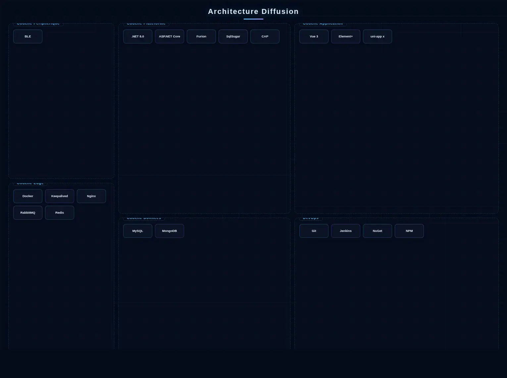
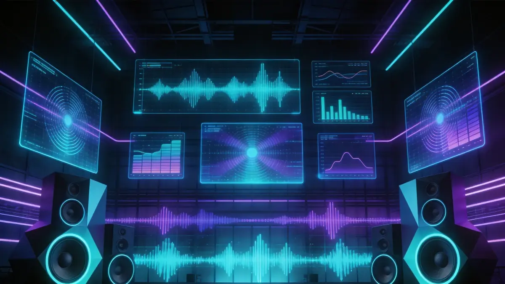

AXLTeco fournit des solutions de sonorisation et de musique d'ambiance de haute qualité pour les bâtiments commerciaux, répondant aux besoins quotidiens et d'évacuation d'urgence.
Architecture de la Solution

Le système de diffusion adopte une architecture Réseau IP Numérique + Microservices. La couche centrale déploie un cluster de services de diffusion basé sur .NET 8.0 + ASP.NET Core, avec Furion fournissant des plug-ins modulaires et des capacités d'API dynamiques, et DotNetCore.CAP assurant la livraison fiable et la cohérence transactionnelle des commandes de diffusion; des files de messages RabbitMQ orchestrent la planification audio multi-sources par priorités et le déclenchement d'urgence incendie, tandis que Redis Cluster met en cache les tâches planifiées, les états de zones et les listes de lecture. SqlSugar complète le mappage ORM pour les permissions multi-locataires et les registres d'équipements. La couche transmission exploite les réseaux IP existants ou un réseau indépendant, avec Keepalived + Nginx actif-secours assurant la haute disponibilité du plan de gestion. MySQL stocke les grilles de programmes et les audits opérationnels, tandis que MongoDB stocke les enregistrements et les journaux. Le côté gestion construit une console de diffusion visuelle avec Vue 3 + Element Plus, intégrant la planification de programmes, la gradation des permissions, la surveillance de topologie d'équipements et l'écoute en temps réel; le côté mobile développe des applications de télécommande de zones et de diffusion d'urgence avec uni-app x (Vapor Mode). La chaîne DevOps utilise Git + Jenkins + NuGet/NPM pour la livraison continue, avec Docker pour le déploiement standardisé.
Composition de la Solution
Scénarios d'Application

Applicable aux immeubles de bureaux, centres commerciaux, hôtels, écoles, hôpitaux, gares et aéroports.
Avantages de la Solution
Basé sur IP avec déploiement flexible ; transmission numérique pour un son clair ; contrôle fin de zones supportant 256 zones indépendantes ; lien profond avec les systèmes incendie.
Valeur de la Solution
Un seul système répond aux besoins de musique d'ambiance, de diffusion commerciale et d'évacuation d'urgence, réduisant les coûts de construction.
Pratique Projet
Solutions livrées pour de multiples complexes commerciaux, hôtels et écoles à Lagos et autres villes nigérianes, avec un fonctionnement stable.